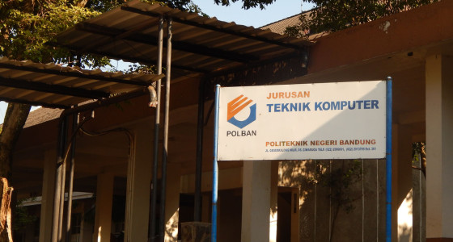

Jurusan Teknik Komputer
Politeknik Negeri Bandung

Profile JTK
Jurusan Teknik Komputer dan Informatika Politeknik Negeri Bandung (lebih dikenal dengan singkatan JTK) merupakan jurusan penyelenggara pendidikan diploma bidang teknologi informasi pertama di Indonesia. Jurusan ini telah menyelenggarakan pendidikan D-3 bidang teknik komputer dan informatika sejak 1977 dan pendidikan D-4 sejak 2009.
Dengan daya tampung sekitar 96 mahasiswa per tahun, sampai saat ini JTK telah menghasilkan lebih dari 2.500 alumni yang bekerja pada berbagai sektor industri, baik di dalam maupun di luar negeri.
Selain menjalankan pendidikan, JTK juga menyelenggarakan penelitian dan pengabdian kepada masyarakat dalam bidang teknologi informasi. Sebagai jurusan pertama yang menyelenggarakan pendidikan profesional bidang teknologi informasi, JTK selalu dijadikan tolok ukur dan telah banyak memberikan bantuan teknis dan non-teknis kepada institusi lain maupun kepada masyarakat umum. Beberapa aktivitas yang sering dilakukan di antaranya adalah pembinaan institusi, pelatihan bidang TI, konsultasi pemanfaatan TI untuk menunjang kegiatan kerja, pengembangan sistem informasi, dan lab/bengkel komputer layanan masyarakat.
Visi dan Misi JTK
JTK memiliki visi untuk menjadi jurusan unggulan dan terdepan di bidang pengkajian, penerapan dan pengembangan teknologi informasi, yang diakui baik di tingkat nasional maupun internasional.
Visi ini dijabarkan ke dalam misi sebagai berikut:
- Menyelenggarakan pendidikan yang menghasilkan sumber daya manusia yang profesional dibidang teknologi informasi;
- Menyelenggarakan program penelitian yang menghasilkan produk unggulan dibidang teknologi informasi;
- Meningkatkan pemanfaatan teknologi informasi di lingkungan internal maupun lingkungan eksternal (industri, pemerintah dan masyarakat umum);
- Menjadi tempat bagi sivitas akademika untuk saling bertukar gagasan dalam lingkungan yang kondusif.
Riwayat Singkat JTK
JTK bermula pada tahun 1977 saat Institut Teknologi Bandung mendirikan pendidikan D3 di bidang teknologi informasi yang bernama Pendidikan Ahli Teknik Jurusan Penggunaan Komputer (PAT-JPK). Kemudian, PAT-JPK beralih menjadi Jurusan Teknik Komputer Politeknik ITB. Beberapa peristiwa penting sejak terbentuknya JTK-Politeknik ITB:
- Tahun 1989, berdasarkan SK Rektor ITB No. 203/SK/PT07.H/1/1989, semua pendidikan diploma di lingkungan ITB harus berada di bawah institusi Politeknik ITB. Kemudian PAT-JPK ITB dialihkan ke Politeknik ITB dan namanya menjadi Jurusan Teknik Komputer Politeknik ITB (JTK-Politeknik ITB).
- Tahun 1994, JTK mendirikan PATI (Pendidikan Aplikasi Teknologi Informatika). PATI kemudian menjadi kelas ekstensi sore hari dan saat ini seluruhnya telah melebur ke dalam kelas reguler JTK.
- Tahun 1995 (sampai sekarang), berdasarkan SK Rektor ITB, dosen-dosen JTK diberi tugas untuk memberikan bantuan pengajaran kepada Jurusan Teknik Sistem Informatika STT Telkom Bandung.
- Tahun 1996, JTK membangun stasion radio paket untuk akses jaringan komputer/internet untuk pemakaian internal di jurusan. Tahun 2001, JTK membangun backbone jaringan serat optik untuk memperlancar komunikasi se-kampus POLBAN, dan terakhir JTK juga membangun stasiun internet waveLAN.
- Tahun 1997, berdasarkan SK Mendikbud, Politeknik ITB berubah nama menjadi Politeknik Negeri Bandung (POLBAN). Inisial JTK-Politeknik ITB kemudian menjadi JTK POLBAN, dan sejak saat itu statusnya tidak lagi di bawah ITB, tapi telah mandiri sebagai suatu Perguruan Tinggi Negeri yang langsung di bawah Kementerian Pendidikan dan Kebudayaan.
- Tahun 1998, berdasarkan SK Mendikbud, nama jurusan berubah menjadi Jurusan Teknik Komputer dan Informatika (JTKI). Namun karena telah demikian familiar, inisial jurusan tetap JTK POLBAN dan bukan JTKI-POLBAN.
- Tahun 2000, JTK mulai mengembangkan Sistem Pendidikan dan Kurikulum Berbasis Kompetensi, antara lain dibutuhkan untuk mengantisipasi kebutuhan lapangan kerja yang profesional dan perkembangan teknologi informasi yang demikian pesat.
- Tahun 2001, pengajuan proposal JTK disetujui oleh Kementerian Pendidikan dan Kebudayaan sehingga mendapat kepercayaan memperoleh dana hibah untuk Proyek Pengembangan Manajemen Pendidikan Tinggi (Development Undergraduate for Education – DUE-Like) sebesar 1,4 milyar untuk periode tahun 2001—2005.
- Tahun 2001 (sampai sekarang), beberapa dosen JTK diberi tugas untuk menjadi asesor Badan Akreditasi Nasional Perguruan Tinggi (BAN-PT).
- Tahun 2002—2005, berdasarkan SK Direktur POLBAN, JTK diberi tugas untuk memberikan bimbingan/bantuan dalam pembentukan dan pengelolaan Jurusan Manajemen Informatika Politeknik Pos Bandung.
- Tahun 2005, pengajuan proposal JTK disetujui oleh Dikti sehingga mendapat kepercayaan memperoleh dana hibah kompetisi A3 sebesar 2,4 milyar untuk periode tahun 2006—2008.
- Tahun 2007, program studi D3 Teknik Informatika mendapatkan nilai akreditasi A dari BAN-PT.
- Tahun 2008, sebagai salah satu indikator dan kegiatan dalam hibah kompetisi A3, JTK tersertifikasi ISO dalam rangka pengendalian mutu.
- Tahun 2009, program studi D4 Teknik Informatika dibuka.
- Tahun 2011—2012, JTK menyelenggarakan program Rekognisi Pembelajaran Lampau untuk program studi D4 Teknik Informatika atas penugasan dari Dikti dalam rangka menginisiasi program pendidikan tersebut di Indonesia.
- Tahun 2012, program studi D4 Teknik Informatika mendapatkan nilai akreditasi B dari BAN-PT.
- Tahun 2016, program studi D4 Teknik Informatika direakreditasi dan mendapatkan nilai A dari BAN-PT.
- Tahun 2018, program studi D3 Teknik Informatika direakreditasi dan kembali mendapatkan nilai A dari BAN-PT.
Struktur Organisasi JTK
A. Manajemen Jurusan Periode 2019-2023
1. Ketua Jurusan
2. Sekretaris
: Bambang Wisnuadhi, M.T
: Ani Rahmani, M.T
B. Program Studi
1. Ka. Prodi Teknik Informatika D-III
2. Ka. Prodi Teknik Informatika D-IV
: Ghifari Munawar S.Kom., M.T
: Santi Sundari, S.Si., M.T
C. Kelompok Bidang Keahlian (KBK)
1. Ka. KBK Sistem Informasi
2. Ka. KBK Rekayasa Perangkat Lunak
3. Ka. KBK Multimedia
: Suprihanto, BSET., M.Sc
: Joe Lian Min, M.Eng.
: Iwan Awaludin, ST, M.T.
D. Laboratorium
1. Ka. Lab. Teknologi Informasi
2. Ka. Lab. Rekayasa Perangkat Lunak
3. Ka. Lab. Sistem Informasi & Database
4. Ka. Lab. Multimedia
5. Ka. Lab. Jaringan & Server
: Setiadi Rachmat B.Eng., M.Eng.
: Irwan Setiawan, M.T
: Ade Hodijah, M.T
: Yudi Widhiyasana, S.Si., M.T
: Maisevli Harika, M.Sc
E. Wali kelas Prodi Teknik Informatika D-III
1. I-A (Angkatan 2018)
2. I-B (Angkatan 2018)
3. II-A (Angkatan 2017)
4. II-B (Angkatan 2017)
5. III-A (Angkatan 2016)
6. III-B (Angkatan 2016)
: Irawan Thamrin, M.T
: Zulkifli Arsyad, M.T
: Dr. Nurjannah Syakrani, M.T
: Jonner Hutahaean M.InfoSys.
: Ida Suhartini, M.Kom.
: Ferry Feirizal BSCS., M.Kom.
F. Wali kelas Prodi Teknik Informatika D-IV
1. I-A (Angkatan 2018)
2. II-A (Angkatan 2017)
3. III-A (Angkatan 2016)
4. IV-A (Angkatan 2015)
: Urip Teguh Setidjohatmo, M.Kom.
: Rahil Jumiyani, M.Sc
: Suprihanto BSET., M.Sc.
: Ade Chandra Nugraha S.Si., M.T
G. Pembina Himpunan
Yudi Widhiyasana, S.Si., M.T
H. Komisi Disiplin Mahasiswa
Ferry Feirizal, BSCS., M.Kom.
I. Bimbingan & Konseling Mahasiswa
Ida Suhartini
J. PAK Jurusan
- Bambang Wisnuadhi, M.T
- Ani Rahmani, M.T
- Jonner Hutahaean, M.InfoSys.
- Irwan Setiawan, M.T
Reputasi JTK
Sejak tahun 1978 JTK telah mendapat banyak reputasi, di antaranya yang terbaru:
- Pada tahun 2009, JTK mendapat sertifikasi ISO 9001:2000 untuk Proses Belajar Mengajar.
- Pada tahun 2007, JTK Terakreditasi A dari BAN-PT (Badan Akreditasi Nasional – Perguruan Tinggi)
- Pada tahun 2007, JTK diminta oleh LSP-Telematika (Lembaga Sertifikasi Profesi Telekomunikasi, Multimedia dan Informatika) agar berperan sebagai lokomotif dalam menyelenggarakan TUK (Tempat Uji Kompetensi). Dosen-dosen JTK juga mulai berperan sebagai asesor BNSP (Badan Nasional Sertifikasi Profesi) dan sebagai narasumber pengadaan modul-modul pelatihan SKKNI (Standar Kompetensi Kerja Nasional Indonesia) dan sebagai reviewer bank-bank soal yang akan dijadikan sebagai MJK (Materi Uji Kompetensi) untuk sertifikasi profesi nasional.
- Pada tahun 2006, JTK bekerja sama dengan APTECH World-Wide (Global IT Education), lembaga sertifikasi internasional yang berpusat di India, untuk menyelenggarakan pelatihan perangkat lunak bidang pemrograman, basis data, tools, jaringan dan internet.
Produk JTK
Produk yang dihasilkan oleh Jurusan Teknik Komputer dan Informatika antara lain:
- Master Plan Sistem Informasi Manajemen PT. PLN Distribusi Jakarta Raya dan Tangerang
- Aplikasi SIMKEU DAN SIMPLE PT. PLN Distribusi Jakarta Raya dan Tangerang
- Sistem Informasi Kekerabatan dan Pemetaan Bahasa-bahasa Daerah di Indonesia
- Master Plan Sistem Informasi Manajemen PEMDA Sumatera Selatan
- Aplikasi Customer Relationship Management
Program Studi JTK
D3 Teknik Informatika
Lulusan program studi D3 Teknik Informatika dibekali dengan pengetahuan teoritis dan pengalaman praktek sehingga siap masuk ke dunia kerja. Lulusan dikategorikan sebagai Informatic-workers yaitu profesional yang bekerja dibidang informatika atau bidang lain yang berbasis teknologi informatika sebagai operator, programmer, atau analis dan designer. Lulusan akan mampu bekerja pada bidang, misalnya seperti :
- Pengembangan Perangkat Lunak dan Aplikasi
- Konsultan Industri Teknologi Informasi
- Pengembangan Perangkat Lunak Multimedia
- Pemeliharaan Teknologi Jaringan
D4 Teknik Informatika
Lulusan program studi D4 Teknik Informatika dibekali dengan pengalaman praktek secara individu maupun dari suatu team untuk membangun, menyajikan dan memelihara perangkat lunak yang berkualitas. Lulusan akan mampu bekerja pada bidang, misalnya seperti :
- Senior Analyst
- System Developer
- Software Testing Professional
- Manager IT
Kontak JTK
Jurusan Teknik Komputer dan Informatika
Politeknik Negeri Bandung
Jl. Gegerkalong Hilir, Desa Ciwaruga Bandung 40012, Kotak Pos 1234 Jawa Barat
Telp. (022)2013789
Fax. (022)2013889